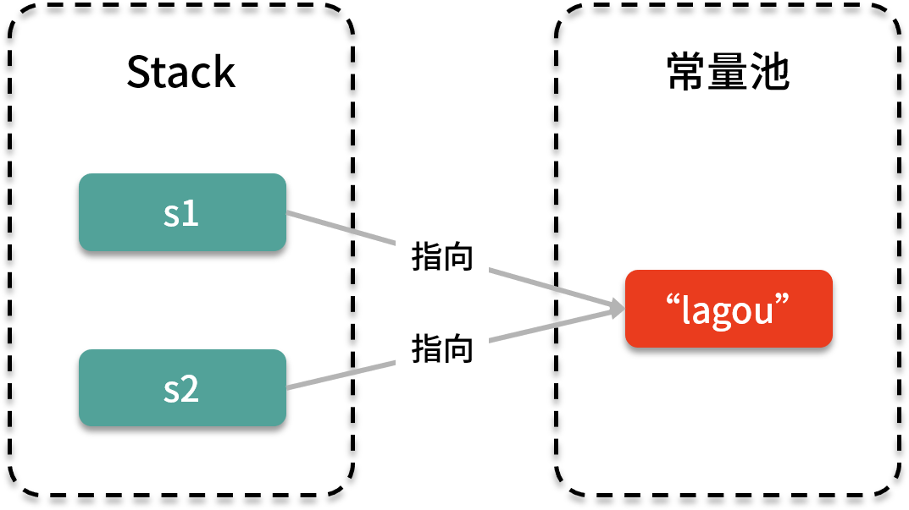

- 00 由点及面，搭建你的 Java 并发知识网.md
- 01 为何说只有 1 种实现线程的方法？.md
- 02 如何正确停止线程？为什么 volatile 标记位的停止方法是错误的？.md
- 03 线程是如何在 6 种状态之间转换的？.md
- 04 waitnotifynotifyAll 方法的使用注意事项？.md
- 05 有哪几种实现生产者消费者模式的方法？.md
- 06 一共有哪 3 类线程安全问题？.md
- 07 哪些场景需要额外注意线程安全问题？.md
- 08 为什么多线程会带来性能问题？.md
- 09 使用线程池比手动创建线程好在哪里？.md
- 10 线程池的各个参数的含义？.md
- 11 线程池有哪 4 种拒绝策略？.md
- 12 有哪 6 种常见的线程池？什么是 Java8 的 ForkJoinPool？.md
- 13 线程池常用的阻塞队列有哪些？.md
- 14 为什么不应该自动创建线程池？.md
- 15 合适的线程数量是多少？CPU 核心数和线程数的关系？.md
- 16 如何根据实际需要，定制自己的线程池？.md
- 17 如何正确关闭线程池？shutdown 和 shutdownNow 的区别？.md
- 18 线程池实现“线程复用”的原理？.md
- 19 你知道哪几种锁？分别有什么特点？.md
- 20 悲观锁和乐观锁的本质是什么？.md
- 21 如何看到 synchronized 背后的“monitor 锁”？.md
- 22 synchronized 和 Lock 孰优孰劣，如何选择？.md
- 23 Lock 有哪几个常用方法？分别有什么用？.md
- 24 讲一讲公平锁和非公平锁，为什么要“非公平”？.md
- 25 读写锁 ReadWriteLock 获取锁有哪些规则？.md
- 26 读锁应该插队吗？什么是读写锁的升降级？.md
- 27 什么是自旋锁？自旋的好处和后果是什么呢？.md
- 28 JVM 对锁进行了哪些优化？.md
- 29 HashMap 为什么是线程不安全的？.md
- 30 ConcurrentHashMap 在 Java7 和 8 有何不同？.md
- 31 为什么 Map 桶中超过 8 个才转为红黑树？.md
- 32 同样是线程安全，ConcurrentHashMap 和 Hashtable 的区别.md
- 33 CopyOnWriteArrayList 有什么特点？.md
- 34 什么是阻塞队列？.md
- 35 阻塞队列包含哪些常用的方法？add、offer、put 等方法的区别？.md
- 36 有哪几种常见的阻塞队列？.md
- 37 阻塞和非阻塞队列的并发安全原理是什么？.md
- 38 如何选择适合自己的阻塞队列？.md
- 39 原子类是如何利用 CAS 保证线程安全的？.md
- 40 AtomicInteger 在高并发下性能不好，如何解决？为什么？.md
- 41 原子类和 volatile 有什么异同？.md
- 42 AtomicInteger 和 synchronized 的异同点？.md
- 43 Java 8 中 Adder 和 Accumulator 有什么区别？.md
- 44 ThreadLocal 适合用在哪些实际生产的场景中？.md
- 45 ThreadLocal 是用来解决共享资源的多线程访问的问题吗？.md
- 46 多个 ThreadLocal 在 Thread 中的 threadlocals 里是怎么存储的？.md
- 47 内存泄漏——为何每次用完 ThreadLocal 都要调用 remove()？.md
- 48 Callable 和 Runnable 的不同？.md
- 49 Future 的主要功能是什么？.md
- 50 使用 Future 有哪些注意点？Future 产生新的线程了吗？.md
- 51 如何利用 CompletableFuture 实现“旅游平台”问题？.md
- 52 信号量能被 FixedThreadPool 替代吗？.md
- 53 CountDownLatch 是如何安排线程执行顺序的？.md
- 54 CyclicBarrier 和 CountdownLatch 有什么异同？.md
- 55 Condition、object.wait() 和 notify() 的关系？.md
- 56 讲一讲什么是 Java 内存模型？.md
- 57 什么是指令重排序？为什么要重排序？.md
- 58 Java 中的原子操作有哪些注意事项？.md
- 59 什么是“内存可见性”问题？.md
- 60 主内存和工作内存的关系？.md
- 61 什么是 happens-before 规则？.md
- 62 volatile 的作用是什么？与 synchronized 有什么异同？.md
- 63 单例模式的双重检查锁模式为什么必须加 volatile？.md
- 64 你知道什么是 CAS 吗？.md
- 65 CAS 和乐观锁的关系，什么时候会用到 CAS？.md
- 66 CAS 有什么缺点？.md
- 67 如何写一个必然死锁的例子？.md
- 68 发生死锁必须满足哪 4 个条件？.md
- 69 如何用命令行和代码定位死锁？.md
- 70 有哪些解决死锁问题的策略？.md
- 71 讲一讲经典的哲学家就餐问题.md
- 72 final 的三种用法是什么？.md
- 73 为什么加了 final 却依然无法拥有“不变性”？.md
- 74 为什么 String 被设计为是不可变的？.md
- 75 为什么需要 AQS？AQS 的作用和重要性是什么？.md
- 76 AQS 的内部原理是什么样的？.md
- 77 AQS 在 CountDownLatch 等类中的应用原理是什么？.md
- 78 一份独家的 Java 并发工具图谱.md
74 为什么 String 被设计为是不可变的？
本课时我们主要讲解为什么 String 被设计为是不可变的？这样设计有什么好处？
String 是不可变的
我们先来介绍一下“String 是不可变的”这件事。在 Java 中，字符串是一个常量，我们一旦创建了一个 String 对象，就无法改变它的值，它的内容也就不可能发生变化（不考虑反射这种特殊行为）。
举个例子，比如我们给字符串 s 赋值为“lagou”，然后再尝试给它赋一个新值，正如下面这段代码所示：
String s = "lagou";
s = "la";
看上去好像是改变了字符串的值，但其背后实际上是新建了一个新的字符串“la”，并且把 s 的引用指向这个新创建出来的字符串“la”，原来的字符串对象“lagou”保持不变。
同样，如果我们调用 String 的 subString() 或 replace() 等方法，同时把 s 的引用指向这个新创建出来的字符串，这样都没有改变原有字符串对象的内容，因为这些方法只不过是建了一个新的字符串而已。例如下面这个例子：
String lagou = "lagou";
lagou = lagou.subString(0, 4);
代码中，利用 lagou.subString(0, 4) 会建立一个新的字符串“lago”这四个字母，比原来少了一个字母，但是这并不会影响到原有的“lagou”这个五个字母的字符串，也就是说，现在内存中同时存在“lagou”和“lago”这两个对象。
那这背后是什么原因呢？我们来看下 String 类的部分重要源码：
public final class String
implements Java.io.Serializable, Comparable<String>, CharSequence {
/** The value is used for character storage. */
private final char value[];
//...
}
首先，可以看到这里面有个非常重要的属性，即 private final 的 char 数组，数组名字叫 value。它存储着字符串的每一位字符，同时 value 数组是被 final 修饰的，也就是说，这个 value 一旦被赋值，引用就不能修改了；并且在 String 的源码中可以发现，除了构造函数之外，并没有任何其他方法会修改 value 数组里面的内容，而且 value 的权限是 private，外部的类也访问不到，所以最终使得 value 是不可变的。
那么有没有可能存在这种情况：其他类继承了 String 类，然后重写相关的方法，就可以修改 value 的值呢？这样的话它不就是可变的了吗？
这个问题很好，不过这一点也不用担心，因为 String 类是被 final 修饰的，所以这个 String 类是不会被继承的，因此没有任何人可以通过扩展或者覆盖行为来破坏 String 类的不变性。
这就是 String 具备不变性的原因。
String 不可变的好处
那我们就考虑一下，为什么当时的 Java 语言设计者会把它设计成这样？当然我们不是 String 的设计者本人，也无从考究他们当时的真实想法。不过我们可以思考一下，如果把 String 设计为不可变的，会带来哪些好处呢？我经过总结，主要有以下这四个好处。
字符串常量池
String 不可变的第一个好处是可以使用字符串常量池。在 Java 中有字符串常量池的概念，比如两个字符串变量的内容一样，那么就会指向同一个对象，而不需创建第二个同样内容的新对象，例如：
String s1 = "lagou";
String s2 = "lagou";
其实 s1 和 s2 背后指向的都是常量池中的同一个“lagou”，如下图所示：

在图中可以看到，左边这两个引用都指向常量池中的同一个“lagou”，正是因为这样的机制，再加上 String 在程序中的应用是如此广泛，我们就可以节省大量的内存空间。
如果想利用常量池这个特性，这就要求 String 必须具备不可变的性质，否则的话会出问题，我们来看下面这个例子：
String s1 = "lagou";
String s2 = "lagou";
s1 = "LAGOU";
System.out.println(s2);
我们想一下，假设 String 对象是可变的，那么把 s1 指向的对象从小写的“lagou”修改为大写的“LAGOU”之后，s2 理应跟着变化，那么此时打印出来的 s2 也会是大写的：
LAGOU
这就和我们预期不符了，同样也就没办法实现字符串常量池的功能了，因为对象内容可能会不停变化，没办法再实现复用了。假设这个小写的“lagou”对象已经被许多变量引用了，如果使用其中任何一个引用更改了对象值，那么其他的引用指向的内容是不应该受到影响的。实际上，由于 String 具备不可变的性质，所以上面的程序依然会打印出小写的“lagou”，不变性使得不同的字符串之间不会相互影响，符合我们预期。
用作 HashMap 的 key
String 不可变的第二个好处就是它可以很方便地用作 HashMap （或者 HashSet） 的 key。通常建议把不可变对象作为 HashMap的 key，比如 String 就很合适作为 HashMap 的 key。
对于 key 来说，最重要的要求就是它是不可变的，这样我们才能利用它去检索存储在 HashMap 里面的 value。由于 HashMap 的工作原理是 Hash，也就是散列，所以需要对象始终拥有相同的 Hash 值才能正常运行。如果 String 是可变的，这会带来很大的风险，因为一旦 String 对象里面的内容变了，那么 Hash 码自然就应该跟着变了，若再用这个 key 去查找的话，就找不回之前那个 value 了。
缓存 HashCode
String 不可变的第三个好处就是缓存 HashCode。
在 Java 中经常会用到字符串的 HashCode，在 String 类中有一个 hash 属性，代码如下：
/** Cache the hash code for the String */
private int hash;
这是一个成员变量，保存的是 String 对象的 HashCode。因为 String 是不可变的，所以对象一旦被创建之后，HashCode 的值也就不可能变化了，我们就可以把 HashCode 缓存起来。这样的话，以后每次想要用到 HashCode 的时候，不需要重新计算，直接返回缓存过的 hash 的值就可以了，因为它不会变，这样可以提高效率，所以这就使得字符串非常适合用作 HashMap 的 key。
而对于其他的不具备不变性的普通类的对象而言，如果想要去获取它的 HashCode ，就必须每次都重新算一遍，相比之下，效率就低了。
线程安全
String 不可变的第四个好处就是线程安全，因为具备不变性的对象一定是线程安全的，我们不需要对其采取任何额外的措施，就可以天然保证线程安全。
由于 String 是不可变的，所以它就可以非常安全地被多个线程所共享，这对于多线程编程而言非常重要，避免了很多不必要的同步操作。
总结
在本课时，我们先介绍了 String 是不可变的，然后介绍了 String 具备不可变性会带来的好处，分别是可以使用字符串常量池、适合作为 HashMap 的 key、缓存 HashCode 以及线程安全。